본 포스트는 서울대학교 Chenglin Fan 교수님의 4190.407 Algorithms (Design and Analysis of Algorithms) 강의 자료(10강 Finding Strongly Connected Components, 총 104장)를 바탕으로, 강의를 처음 듣는 독자도 논리적 흐름을 따라갈 수 있도록 재구성한 것입니다. 1강 표지에 “Part of Slides Borrowed From Mary Wootters”라고 밝혀 두었듯 이 시리즈의 슬라이드는 상당 부분 Stanford의 Mary Wootters 교수님 자료에서 가져온 것입니다. 이번 덱에는 목차 슬라이드가 없어서, 33번째 슬라이드 Enough of review를 경계로 앞쪽의 DFS 복습과 뒤쪽의 강한 연결 요소 이야기를 나누고, 뒤쪽은 슬라이드가 밟아 가는 순서 — 정의 → 알고리즘과 예시 → 왜 동작하는가 → 형식적 증명 — 대로 대섹션을 세웠습니다.
한 줄 요약 (TL;DR)
“DFS를 두 번 — 원래 그래프에서 한 번, 간선을 모두 뒤집은 그래프에서 종료 시각이 큰 정점부터 한 번 — 돌리면, 두 번째 DFS 숲의 트리 하나하나가 정확히 강한 연결 요소 하나하나입니다.”
유향 그래프에서 서로 오갈 수 있는 정점들의 덩어리를 강한 연결 요소(strongly connected component, SCC)라고 합니다. 각 정점에서 DFS를 돌려 도달 관계를 모으는 단순한 방법은 \(\Omega(n^2)\)이 들지만, 코사라주 알고리즘(Kosaraju’s algorithm)은 DFS 두 번과 간선 뒤집기 한 번으로 \(O(n+m)\)에 끝납니다. 이것이 맞는 이유는 9강의 위상 정렬 논증을 SCC 단위로 끌어올린 데 있습니다. SCC 하나를 정점 하나로 줄인 SCC 그래프는 DAG이고, 그 간선 \(A \to B\)에서는 언제나 \(A\)의 종료 시각이 \(B\)보다 큽니다. 그래서 간선을 뒤집으면 종료 시각이 가장 큰 SCC에서는 밖으로 나가는 간선이 하나도 없게 되고, 거기서 시작한 DFS는 그 SCC만 정확히 찾아냅니다. 찾은 SCC를 지우고 이를 되풀이하는 과정이 곧 두 번째 DFS이며, 귀납법이 그 정당성을 마무리합니다.
지난 시간과 오늘 (Last Time and Today)
지난 강의에서 다룬 것은 다음과 같습니다.
- 그래프 표현과 깊이 우선 탐색(DFS)
- 그리고 응용!
- 위상 정렬 (topological sorting)
- 이진 탐색 트리의 중위 순회 (in-order traversal of BSTs)
- 핵심은 탐색 알고리즘이 암묵적으로 짓는 트리의 구조에 주목하는 것이었습니다.
그리고 너비 우선 탐색(BFS)과 그 응용도 보았습니다.
- 가중치 없는 그래프에서의 최단 경로
- 슬라이드는 지난주 자료에 이분 그래프 판정이라는 응용이 하나 더 있었지만 시간 관계상 수업에서 다루지 못했으니, 관심 있으면 자료를 보라고 덧붙입니다.
- 그리고 보라색 글씨로 질문을 하나 남깁니다 — DFS로도 이분 그래프를 판정할 수 있을까요?
슬라이드는 이 질문에 답하지 않지만, 답은 “그렇다”입니다. 무향 그래프에서 DFS 트리를 따라 부모와 자식을 서로 다른 색으로 칠하면, DFS의 비트리 간선은 언제나 어떤 정점과 그 조상을 잇습니다. 이런 간선의 양 끝이 같은 색이면 트리 경로의 길이가 짝수이므로, 그 간선까지 더한 순환의 길이는 홀수가 됩니다. 반대로 그런 간선이 하나도 없으면 그 색칠 자체가 두 묶음으로 나누는 방법이 됩니다. 그러므로 9강의 BFS 판정과 똑같은 논리로 \(O(n+m)\)에 판정할 수 있습니다.
오늘의 주제는 DFS의 응용 하나 더 — 강한 연결 요소 찾기입니다. 다만 그 전에 DFS를 짧게 복습합니다.
1. DFS 복습 (Recall: DFS)
1.1 오늘의 그래프는 모두 유향입니다 (Today, All Graphs Are Directed)
복습의 첫 슬라이드는 9강에서처럼 DFS를 분필과 실 한 가닥으로 미로를 탐험하는 방법이라고 다시 소개하면서, 붉은 글씨로 오늘의 전제를 못 박습니다.
- 오늘은 모든 그래프가 유향입니다!
- 지난주에 한 것들이 여전히 모두 통하는지 확인해 보세요!
9강에서 이미 확인했듯 DFS는 유향 그래프에서도 그대로 동작합니다. 규칙은 나가는 간선만 따라 걷는다는 것 하나뿐이고, 의사코드의 w.neighbors를 나가는 이웃의 목록으로 읽으면 됩니다.
1.2 분필과 실로 미로 탐색하기 (Exploring a Labyrinth with Chalk and a Piece of String)
다음 슬라이드들은 9강의 미로 그림을 그대로 가져오되, 보라색 글씨대로 모든 간선에 방향을 붙인 것입니다. 그리고 이번에는 순환이 있다는 점을 짚어 둡니다. 색의 뜻은 9강과 같습니다.
| 색 | 상태 | 슬라이드의 설명 |
|---|---|---|
| 연한 파랑 | 미방문 | 아직 가 보지 않았다 (Not been there yet) |
| 초록 | 진행 중 | 가 보았지만, 나가는 길을 다 살피지 못했다 (Been there, haven’t explored all the paths out) |
| 진한 파랑 | 완료 | 가 보았고, 나가는 길을 모두 살폈다 (Been there, have explored all the paths out) |
슬라이드는 또 모든 노드의 시작 시각과 종료 시각도 기록한다는 것을 다시 상기시킵니다. 이 슬라이드들은 종료 시각을 finish 대신 leave라고 적습니다.
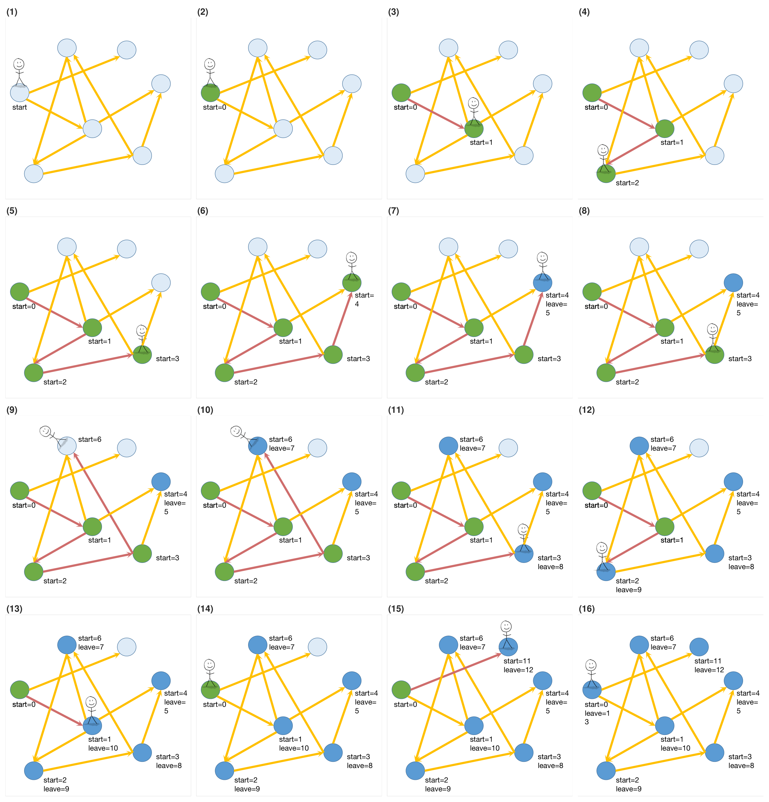
그림의 시각을 표로 옮기면 다음과 같습니다. 정점 이름은 다음 절의 그림을 따랐습니다.
| 정점 | start | leave (= finish) | 누가 불렀나 |
|---|---|---|---|
| A | 0 | 13 | 시작점 |
| B | 1 | 10 | A |
| C | 2 | 9 | B |
| G | 3 | 8 | C |
| F | 4 | 5 | G |
| D | 6 | 7 | G |
| E | 11 | 12 | A |
- 슬라이드가 말한 순환은 \(C \to G \to D \to C\)입니다. D에서 C로 가는 간선을 만났을 때 C는 진행 중이어서 다시 들어가지 않습니다.
- 순환이 있어도 시각을 적는 규칙, 그리고 9강에서 본 시간 구간의 포함 구조는 그대로입니다. 예를 들어 C의 구간 \([2, 9]\) 안에 G의 구간 \([3, 8]\)이, 그 안에 F의 구간 \([4, 5]\)와 D의 구간 \([6, 7]\)이 들어 있습니다.
1.3 DFS는 닿을 수 있는 모든 곳 위에 트리를 짓습니다 (Depth First Search Implicitly Creates a Tree on Everything You Can Reach)
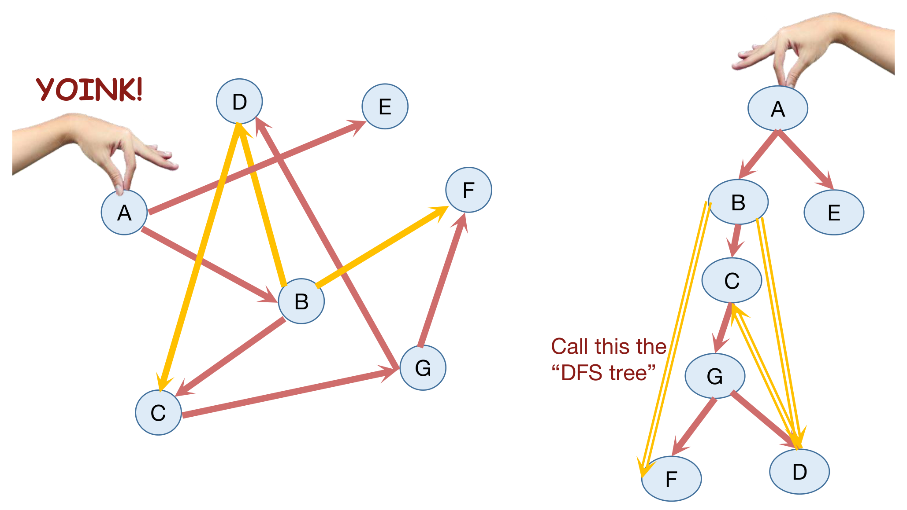
- DFS는 시작점에서 닿을 수 있는 모든 곳 위에 암묵적으로 트리를 짓습니다.
- 이것을 DFS 트리라고 부릅니다.
트리에 들지 못한 노란 간선을 보면 유향 그래프만의 특징이 드러납니다. 무향 그래프에서 비트리 간선은 정점과 그 조상을 이었는데, 여기서는 조상에서 후손으로 내려가는 간선(B→F, B→D)과 후손에서 조상으로 올라가는 간선(D→C)이 구분됩니다. 후손에서 조상으로 올라가는 간선은 트리 경로와 합쳐 반드시 순환을 이룹니다.
1.4 모든 곳에 닿지 못할 때 (When You Can’t Reach Everything)
- DFS를 반복해서 돌려 깊이 우선 숲(depth-first forest)을 얻습니다.
유향 그래프에서는 무향 그래프보다 이 상황이 훨씬 흔합니다. 간선이 이어져 있어도 방향이 맞지 않으면 건너갈 수 없기 때문입니다.
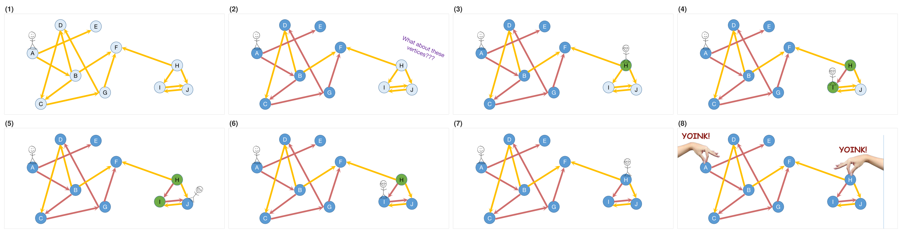
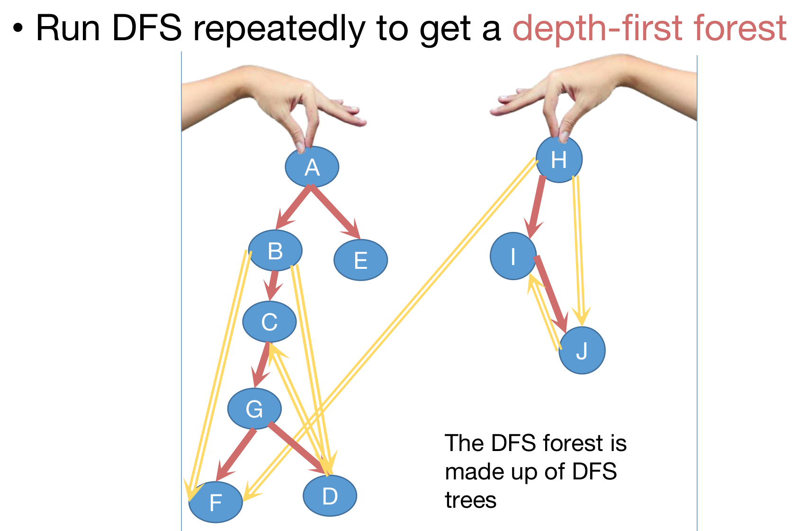
- DFS 숲은 DFS 트리들로 이루어집니다.
- 수행 시간은 9강의 “그래프 전체를 탐색할 때”와 같은 계산으로 여전히 \(O(n+m)\)입니다. 정점마다 DFS가 정확히 한 번 불리고, 각 정점에서 나가는 간선을 한 번씩 훑기 때문입니다.
1.5 시간 구간의 구조 다시 보기 (Recall: Works the Same with DFS Forests)
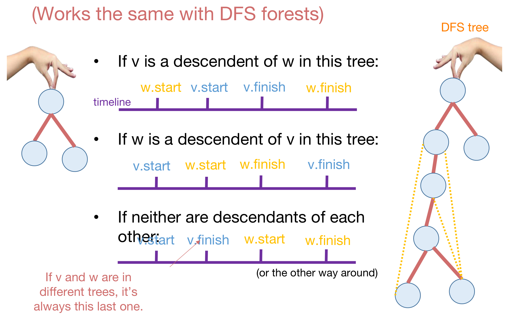
| DFS 숲에서의 관계 | 시각의 순서 | 두 구간의 관계 |
|---|---|---|
| \(v\)가 \(w\)의 후손 | \(w.\text{start} < v.\text{start} < v.\text{finish} < w.\text{finish}\) | \(v\)의 구간이 \(w\)의 구간 안에 있다 |
| \(w\)가 \(v\)의 후손 | \(v.\text{start} < w.\text{start} < w.\text{finish} < v.\text{finish}\) | \(w\)의 구간이 \(v\)의 구간 안에 있다 |
| 어느 쪽도 후손이 아님 | \(v.\text{start} < v.\text{finish} < w.\text{start} < w.\text{finish}\) (또는 그 반대) | 두 구간이 겹치지 않는다 |
서로 다른 트리에 있는 두 정점이 언제나 셋째 경우인 것은 바깥 루프의 구조 때문입니다. 새 트리는 앞 트리의 DFS 호출이 완전히 끝난 뒤에야 시작되므로, 앞 트리의 모든 구간은 뒤 트리의 모든 구간보다 먼저 닫힙니다. 9강에서 괄호 정리(parenthesis theorem)라고 부른 이 구조가 오늘 증명의 주된 도구입니다.
2. 강한 연결 요소 (Strongly Connected Components)
복습은 여기까지입니다. 슬라이드는 Enough of review라는 제목 아래 오늘의 주인공을 띄웁니다 — 강한 연결 요소.
2.1 강하게 연결된 그래프 (Strongly Connected)
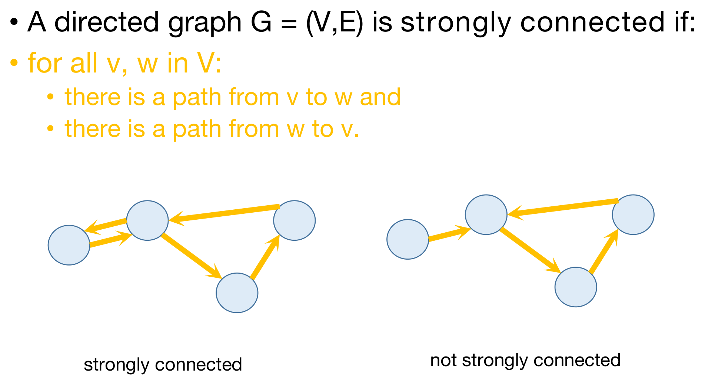
유향 그래프 \(G = (V, E)\)가 강하게 연결되어(strongly connected) 있다는 것은, 모든 \(v, w \in V\)에 대해
- \(v\)에서 \(w\)로 가는 경로가 있고,
- \(w\)에서 \(v\)로 가는 경로도 있다
는 뜻입니다.
무향 그래프의 “연결되어 있다”는 경로가 하나 있으면 양쪽으로 다닐 수 있었지만, 유향 그래프에서는 가는 길과 오는 길을 따로 요구해야 합니다.
2.2 그래프를 SCC로 분해하기 (We Can Decompose a Graph into Strongly Connected Components)
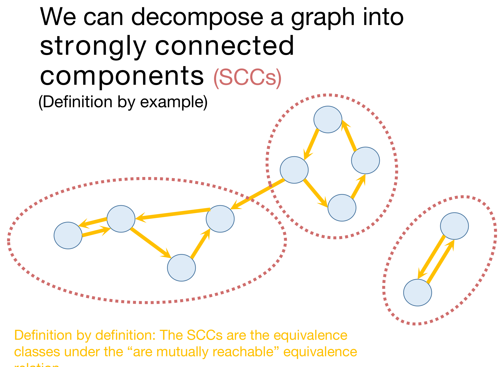
슬라이드는 먼저 예로써 정의한 뒤, 아래에 정의로써 정의합니다 — SCC는 “서로 도달 가능하다”는 동치 관계의 동치류입니다.
두 정점 \(u, v\)에 대해 \(u\)에서 \(v\)로, \(v\)에서 \(u\)로 가는 경로가 모두 있을 때 \(u \sim v\)라고 씁시다. 이것이 동치 관계라는 것은 세 성질로 확인됩니다.
- 반사성: 길이 0인 경로가 있으므로 \(u \sim u\)입니다.
- 대칭성: 정의 자체가 \(u\)와 \(v\)에 대해 대칭이므로 \(u \sim v\)이면 \(v \sim u\)입니다.
- 추이성: \(u \sim v\)이고 \(v \sim w\)이면, \(u \to v\) 경로와 \(v \to w\) 경로를 이어 \(u \to w\) 경로를, \(w \to v\) 경로와 \(v \to u\) 경로를 이어 \(w \to u\) 경로를 얻으므로 \(u \sim w\)입니다.
동치 관계는 집합을 서로소인 동치류로 나누므로, 모든 정점은 정확히 하나의 SCC에 속합니다. 정점 하나짜리 SCC도 있을 수 있습니다. 예를 들어 순환에 끼지 못한 정점은 혼자서 SCC를 이룹니다.
유향 그래프 \(G = (V, E)\)의 강한 연결 요소(strongly connected component, SCC)는 관계
\[ u \sim v \iff (u \text{에서 } v \text{로 가는 경로가 있다}) \;\wedge\; (v \text{에서 } u \text{로 가는 경로가 있다}) \]
의 동치류입니다. 각 SCC는 그 자체로 강하게 연결되어 있고, 정점을 하나라도 더 넣으면 강한 연결성이 깨지는 극대(maximal) 집합입니다.
2.3 왜 SCC에 관심을 가질까요 (Why Do We Care about SCCs?)
슬라이드는 인터넷을 예로 듭니다.
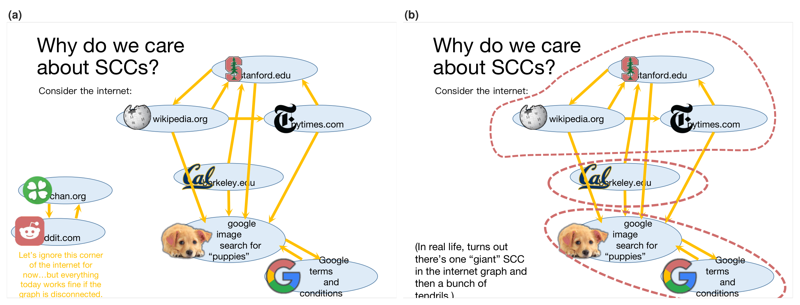
그리고 이유를 정리합니다.
- SCC는 커뮤니티에 대해 알려 줍니다. 서로가 서로에게 링크로 닿을 수 있는 사이트 묶음은 자연스러운 하나의 집단입니다.
- 많은 그래프 알고리즘이 SCC 위에서만 의미가 있습니다.
- 그래서 첫 단계로 SCC를 찾아야 할 때가 있습니다.
- 예: 2-SAT을 푸는 알고리즘 — 슬라이드는 이것을 알 필요는 없다고 덧붙입니다. 예로 든 식은 다음과 같습니다.
\[ (x \vee y) \wedge (\neg x \vee z) \wedge (\neg y \vee \neg z) \]
- 예: 노동 시장 데이터를 이해하려면 먼저 그것을 SCC로 쪼개야 했던 경제학자
2-SAT은 위처럼 리터럴 두 개짜리 절들의 논리곱을 참으로 만드는 진리값 배정이 있는지 묻는 문제입니다. 위 식은 \(x = \text{참}, y = \text{거짓}, z = \text{참}\)으로 세 절이 모두 참이 됩니다. 슬라이드는 더 들어가지 않지만, 표준적인 풀이는 각 절을 함의 간선 두 개로 바꾼 그래프에서 어떤 변수 \(x\)와 \(\neg x\)가 같은 SCC에 들어가는지를 보는 것입니다. SCC가 다른 문제의 전처리 단계로 쓰이는 대표적인 경우입니다.
2.4 SCC를 어떻게 찾을까요 (How to Find SCCs?)
슬라이드는 두 가지 시도를 적어 둡니다.
- 시도 1: 가능한 모든 분해를 고려해 확인한다.
- 시도 2: 대략 이런 식으로 —
- DFS를 여러 번 돌려 어떤 \(u\)와 \(v\)가 같은 SCC에 속하는지 알아낸다.
- 그 정보를 모아 SCC를 알아낸다.
그리고 1–2분 생각해 보라고 묻습니다 — DFS로 SCC를 찾는 단순한 방법을 떠올려 보세요. 수행 시간은 얼마일까요? \(n^2\)보다 클까요, 작을까요?
시도 1은 출발점이 될 수 없습니다. \(n\)개 정점을 묶음으로 나누는 방법의 수는 \(n\)에 대해 지수적으로 늘어나기 때문입니다.
2.5 단순한 해법 하나 (One Straightforward Solution)
시도 2를 그대로 옮긴 의사코드입니다. 노란 글씨는 이것이 최종 해법은 아니니 너무 신경 쓰지 말라고 덧붙입니다.
SCCs = [ ]
For each u:
Run DFS from u
For each vertex v that u can reach:
If v is in an SCC we've already found:
Run DFS from v to see if you can reach u
If so, add u to v's SCC
Break
If we didn't break, create a new SCC which just contains u.- \(u\)가 이미 찾은 SCC의 어떤 \(v\)에 닿고 \(v\)도 \(u\)에 닿는다면, \(u \sim v\)이므로 \(u\)를 \(v\)의 SCC에 넣습니다.
- 그런 \(v\)가 없으면 \(u\)는 지금까지 찾은 어떤 SCC와도 서로 닿지 않으므로 새 SCC를 엽니다.
슬라이드의 붉은 글씨가 두 반복문을 가리키며 결론을 내립니다 — 나머지를 아무리 영리하게 구현해도 수행 시간은 적어도 \(\Omega(n^2)\)입니다. 바깥 루프가 정점마다 DFS를 한 번씩 돌리고, 안쪽 루프가 \(u\)에서 닿는 정점을 하나하나 훑기 때문입니다. 예를 들어 그래프 전체가 강하게 연결되어 있으면 정점 \(n\)개 각각에서 시작한 DFS가 모두 \(n\)개 정점을 방문하므로, 그것만으로 \(n \cdot n = n^2\)번의 방문이 일어납니다.
2.6 오늘의 목표: 코사라주 알고리즘 (Today: Kosaraju’s Algorithm)
- 오늘은 강한 연결 요소를 \(O(n+m)\) 시간에 찾는 방법을 봅니다.
- !!!!!
- 이것을 코사라주 알고리즘(Kosaraju’s algorithm)이라고 부릅니다.
DFS 한 번이 \(O(n+m)\)이므로, SCC를 찾는 데 DFS 몇 번 분의 시간만 쓰겠다는 것입니다.
2.7 연습 문제 (Exercise)
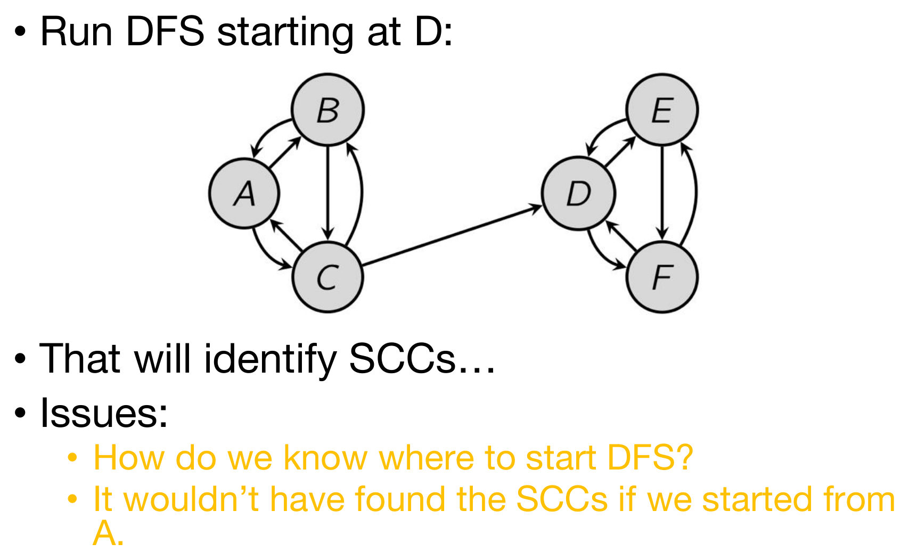
- D에서 DFS를 시작해 보세요.
- D에서 닿는 정점은 D, E, F뿐이므로, 첫 DFS 트리가 정확히 SCC \(\{D, E, F\}\)입니다.
- 이어서 A에서 DFS를 다시 시작하면 C→D의 D는 이미 방문되었으므로, 두 번째 트리가 정확히 \(\{A, B, C\}\)입니다.
- 그러면 SCC를 찾게 됩니다…
- 문제점:
- DFS를 어디서 시작해야 하는지 어떻게 알까요?
- A에서 시작했다면 SCC를 찾지 못했을 것입니다. A의 트리에 여섯 정점이 모두 들어가기 때문입니다.
이 연습 문제가 오늘의 핵심 질문을 정확히 짚습니다. DFS는 나가는 간선이 다른 SCC로 이어지지 않는 SCC, 곧 SCC들 사이의 흐름에서 맨 하류에 있는 SCC에서 시작했을 때만 그 SCC 하나를 깔끔하게 잘라 냅니다. 그 SCC를 찾고 나면 그다음 하류 SCC에서 시작하면 됩니다. 남은 문제는 그런 시작점을 SCC를 모르는 상태에서 어떻게 고르느냐이고, 코사라주 알고리즘의 답은 종료 시각입니다.
무향 그래프에서는 DFS를 다시 시작할 때마다 연결 요소가 하나씩 나왔습니다(9강). 유향 그래프에서는 그렇지 않습니다. DFS가 찾는 것은 시작점에서 닿을 수 있는 정점들이고, 닿을 수 있다고 해서 되돌아올 수 있는 것은 아니기 때문입니다. 위의 A에서 시작한 DFS처럼, DFS 트리 하나에는 SCC 여러 개가 통째로 들어갈 수 있습니다.
3. 알고리즘 (Algorithm)
3.1 코사라주 알고리즘 (Kosaraju’s Algorithm)
- DFS를 해서 DFS 숲을 만듭니다.
- 시작 정점은 아무 순서로나 고릅니다.
- 종료 시각을 기록합니다.
- 그래프의 모든 간선을 뒤집습니다.
- DFS를 다시 해서 또 하나의 DFS 숲을 만듭니다.
- 이번에는 첫 번째 DFS에서 얻은 종료 시각의 역순으로 정점을 늘어놓고, 그 순서대로 시작 정점을 고릅니다.
- SCC는 두 번째 DFS 숲의 서로 다른 트리들입니다.
간선을 모두 뒤집은 그래프를 이하 \(G^{\text{rev}}\)라고 쓰겠습니다. 표준 교과서(CLRS)는 이를 전치 그래프(transpose) \(G^{T}\)라고 부릅니다. 두 번째 DFS의 “종료 시각의 역순”은 아직 방문하지 않은 정점 가운데 종료 시각이 가장 큰 것을 다음 시작점으로 고른다는 뜻입니다.
3.2 예시 (Example)
예시 그래프와 그 SCC
2.3절의 인터넷 그래프를 로고만 남겨 다시 그린 것입니다. 이하 정점을 다음 이름으로 부르겠습니다.
| 이름 | 슬라이드의 로고 | 2.3절의 사이트 |
|---|---|---|
Stanford |
붉은 S와 나무 | stanford.edu |
Wiki |
퍼즐 조각 지구본 | wikipedia.org |
NYT |
검은 고딕체 T | nytimes.com |
Cal |
남색 Cal | berkeley.edu |
Puppies |
강아지 사진 | 구글 이미지 검색 “puppies” |
Google |
구글 G | Google 이용 약관 |
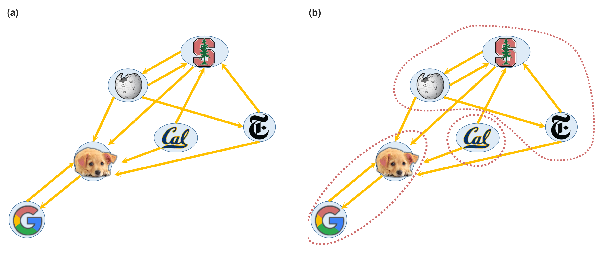
- 간선은 열한 개입니다.
- Stanford↔︎Wiki (양방향 두 개), Wiki→NYT, NYT→Stanford — 이 넷이 Stanford, Wiki, NYT를 하나의 순환으로 묶습니다.
- Puppies↔︎Google (양방향 두 개)
- Stanford→Puppies, Wiki→Puppies, NYT→Puppies, Cal→Stanford, Cal→Puppies — SCC 사이를 잇는 간선들입니다.
- SCC는 \(\{\texttt{Stanford}, \texttt{Wiki}, \texttt{NYT}\}\), \(\{\texttt{Cal}\}\), \(\{\texttt{Puppies}, \texttt{Google}\}\)의 세 개입니다.
1단계: 임의의 정점에서 DFS (Start with an Arbitrary Vertex and Do DFS)
- 임의의 정점에서 시작해 DFS를 합니다. 끝날 때까지 반복합니다.
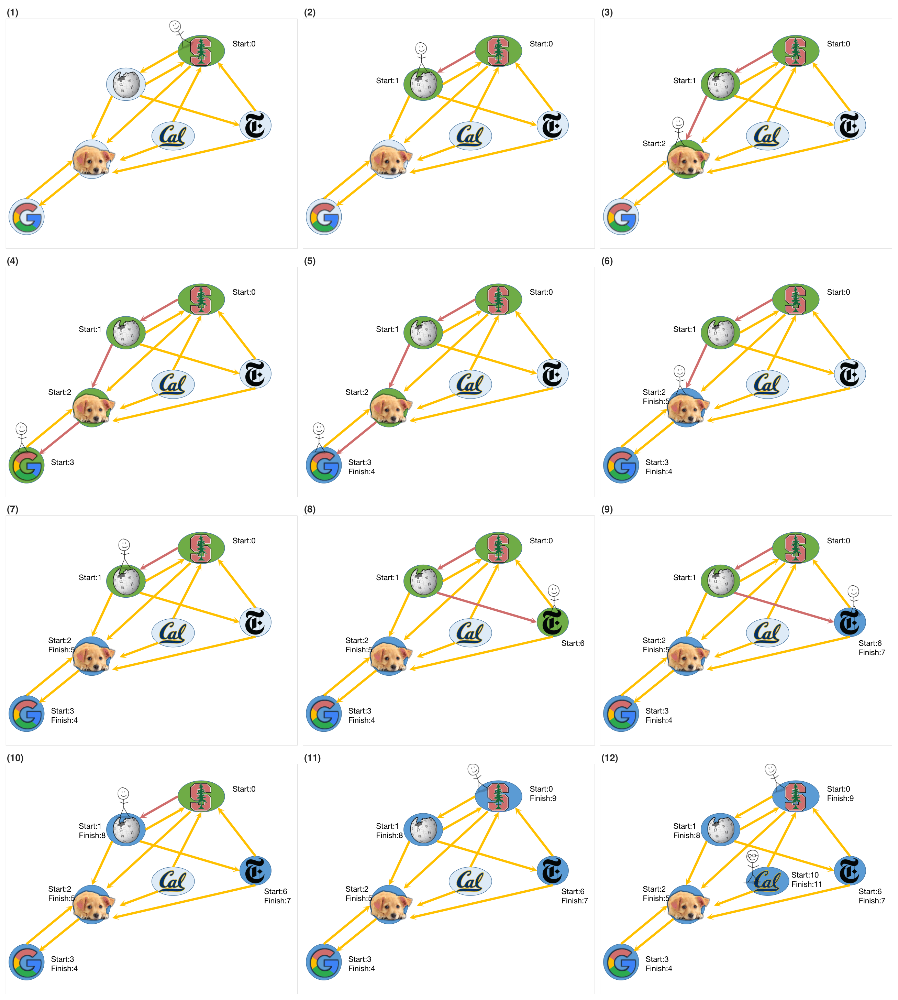
| 정점 | 시작 시각 | 종료 시각 | 누가 불렀나 |
|---|---|---|---|
Stanford |
0 | 9 | 시작점 (첫 번째 트리) |
Wiki |
1 | 8 | Stanford |
Puppies |
2 | 5 | Wiki |
Google |
3 | 4 | Puppies |
NYT |
6 | 7 | Wiki |
Cal |
10 | 11 | 시작점 (두 번째 트리) |
첫 번째 DFS 숲은 Stanford를 뿌리로 하는 트리와 Cal 혼자인 트리, 두 그루입니다. 첫 트리 하나에 SCC 두 개(Stanford–Wiki–NYT와 Puppies–Google)가 섞여 들어가 있다는 점에 주목하세요. 2.7절의 경고 그대로입니다.
2단계: 모든 간선 뒤집기 (Reverse All the Edges)
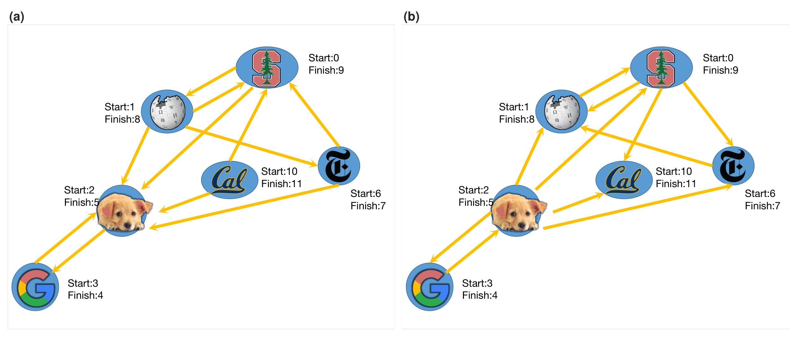
- 모든 간선을 뒤집습니다.
- 뒤집어도 SCC는 그대로입니다. \(G\)에 \(u\)에서 \(v\)로 가는 경로가 있다는 것은 \(G^{\text{rev}}\)에 \(v\)에서 \(u\)로 가는 경로가 있다는 것과 같으므로, “서로 도달 가능하다”는 관계가 바뀌지 않기 때문입니다.
- 바뀌는 것은 SCC 사이의 간선 방향뿐입니다. Cal에서 나가던 간선 두 개는 이제 Cal로 들어오고, Puppies–Google 묶음으로 들어오던 간선들은 이제 그 묶음에서 나갑니다.
3단계: 종료 시각이 큰 정점부터 다시 DFS (Do DFS Again, Starting with the Vertices with the Largest Finish Time)
- DFS를 다시 하되, 이번에는 종료 시각이 가장 큰 정점부터 시작합니다.
- 슬라이드는 파란 글씨로 덧붙입니다 — 시작·종료 시각은 바꾸지 않습니다. 첫 번째 실행의 값을 그대로 둡니다. 그림 속 Start와 Finish는 모두 첫 번째 DFS의 값이고, 두 번째 DFS가 쓰는 것은 그 종료 시각이 정해 주는 시작점의 순서뿐입니다.
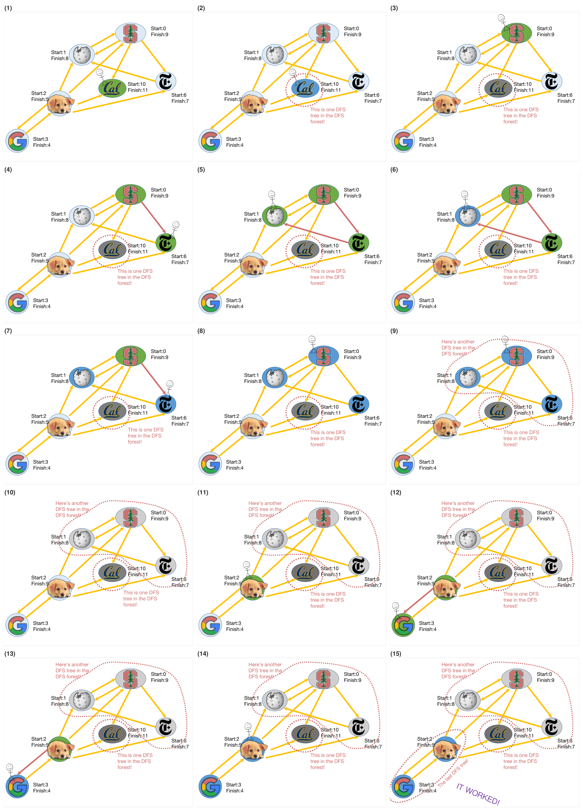
| 차례 | 시작점 (첫 DFS의 종료 시각) | 두 번째 DFS 트리 | 일치하는 SCC |
|---|---|---|---|
| 1 | Cal (11) |
\(\{\texttt{Cal}\}\) | ✓ |
| 2 | Stanford (9) |
\(\{\texttt{Stanford}, \texttt{NYT}, \texttt{Wiki}\}\) | ✓ |
| — | Wiki (8), NYT (7) |
이미 방문함 → 건너뜀 | |
| 3 | Puppies (5) |
\(\{\texttt{Puppies}, \texttt{Google}\}\) | ✓ |
| — | Google (4) |
이미 방문함 → 건너뜀 |
됐습니다! 두 번째 DFS 숲의 트리 세 그루가 SCC 세 개와 정확히 일치합니다. 첫 번째 DFS에서는 한 트리에 섞여 있던 Stanford–Wiki–NYT와 Puppies–Google이, 두 번째 DFS에서는 깔끔하게 갈라졌습니다. 두 번째 Stanford 트리가 Puppies 쪽으로 새어 나가지 않은 것은, 뒤집힌 그래프에서는 그 사이 간선이 Puppies에서 Stanford 쪽으로 나 있기 때문입니다.
두 번째 DFS에서 Stanford의 나가는 간선은 Wiki, NYT, Cal 세 개이고, 슬라이드는 NYT를 먼저 탔습니다. Wiki를 먼저 탔더라도 트리의 모양은 달라지지만 트리에 드는 정점의 집합은 똑같이 \(\{\texttt{Stanford}, \texttt{Wiki}, \texttt{NYT}\}\)입니다. 코사라주 알고리즘이 보장하는 것은 트리의 정점 집합이고, 그것은 이웃을 훑는 순서와 무관합니다. 첫 번째 DFS의 시작점과 이웃 순서도 마찬가지로 아무렇게나 골라도 됩니다. 그러면 종료 시각의 값은 달라지지만, 다음 절의 증명은 어떤 순서에 대해서든 성립합니다.
4. 왜 이게 동작할까요 (One Question: Why Does That Work?)
슬라이드는 놀란 고양이 그림과 함께 묻습니다 — “뭐라고? 이게 왜 되는 거지?” 이 절은 직관을, 다음 절은 엄밀한 증명을 맡습니다.
4.1 SCC 그래프 (The SCC Graph)
슬라이드는 “사고 실험”이라는 그림과 함께 제안합니다 — 각 SCC를 새 그래프의 정점 하나라고 생각해 봅시다. SCC \(A\)의 어떤 정점에서 SCC \(B\)의 어떤 정점으로 가는 간선이 원래 그래프에 하나라도 있으면, 새 그래프에 간선 \(A \to B\)를 긋습니다. 이렇게 얻은 그래프가 SCC 그래프입니다. 표준 교과서(CLRS)는 이를 성분 그래프(component graph) \(G^{\text{SCC}}\)라고 부릅니다.
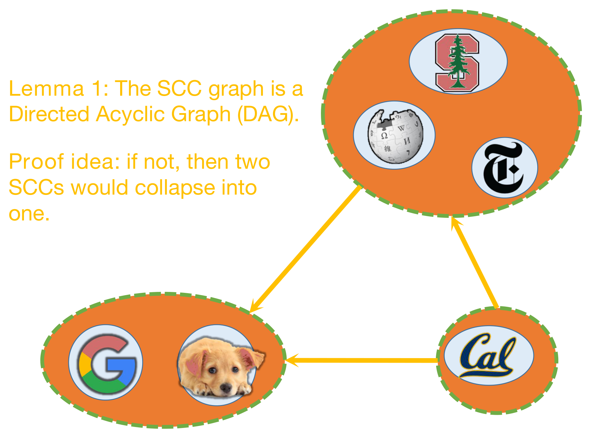
SCC 그래프는 유향 비순환 그래프(DAG)입니다.
증명. 슬라이드의 증명 아이디어 — 그렇지 않다면 두 SCC가 하나로 합쳐진다 — 를 풀어 쓰겠습니다. SCC 그래프에 서로 다른 SCC \(A_1, A_2, \dots, A_k\) (\(k \ge 2\))를 도는 순환 \(A_1 \to A_2 \to \cdots \to A_k \to A_1\)이 있다고 합시다. \(u \in A_1\), \(v \in A_2\)를 아무렇게나 잡습니다.
- \(u\)에서 \(v\)로 가는 경로가 있습니다. 간선 \(A_1 \to A_2\)를 만드는 원래 간선 \((a, b)\) (\(a \in A_1\), \(b \in A_2\))가 있고, \(A_1\) 안에서 \(u \to a\)로, \(A_2\) 안에서 \(b \to v\)로 갈 수 있기 때문입니다.
- \(v\)에서 \(u\)로 가는 경로도 있습니다. 같은 논리로 \(A_2 \to A_3 \to \cdots \to A_k \to A_1\)을 따라 각 SCC 안의 경로와 SCC 사이의 간선을 이어 붙이면 됩니다.
따라서 \(u \sim v\)인데, 이는 \(u\)와 \(v\)가 서로 다른 SCC에 속한다는 가정에 어긋납니다. \(\blacksquare\)
4.2 SCC의 시작·종료 시각 (Starting and Finishing Times in a SCC)
이제 SCC 그래프의 “정점”에도 시각을 붙입니다. 오른쪽 위 글씨대로 모든 시각은 첫 번째 DFS 실행을 기준으로 합니다.
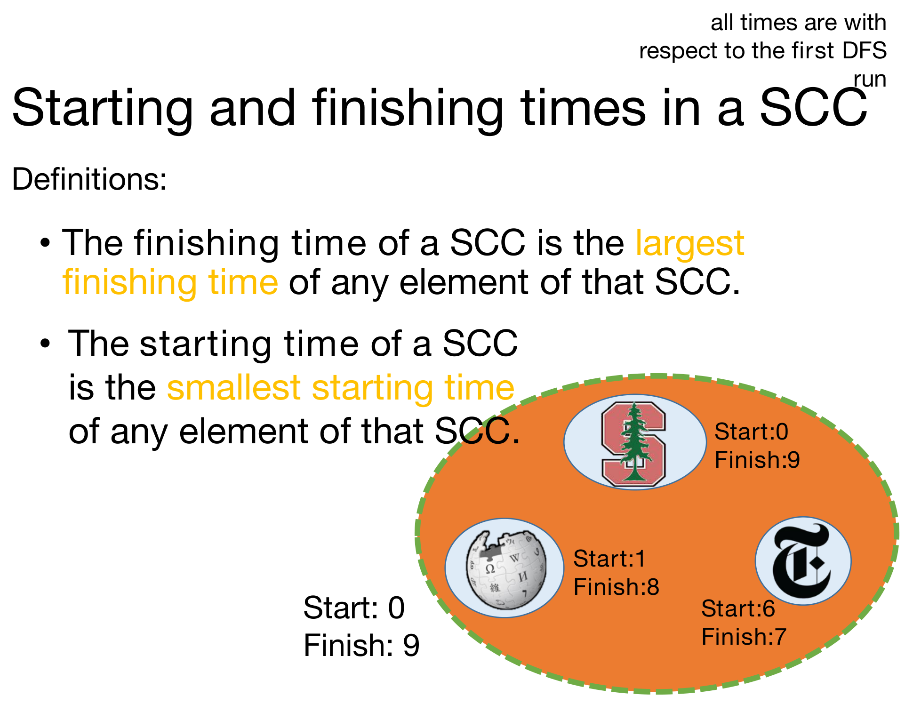
- SCC의 종료 시각은 원소들의 종료 시각 가운데 가장 큰 값입니다.
- SCC의 시작 시각은 원소들의 시작 시각 가운데 가장 작은 값입니다.
식으로 쓰면, 첫 번째 DFS의 시각을 기준으로 SCC \(A\)에 대해 다음과 같습니다.
\[ A.\text{finish} = \max_{v \in A} v.\text{finish}, \qquad A.\text{start} = \min_{v \in A} v.\text{start} \]
4.3 시작·종료 시각이 붙은 SCC DAG (Our SCC DAG with Start and Finish Times)
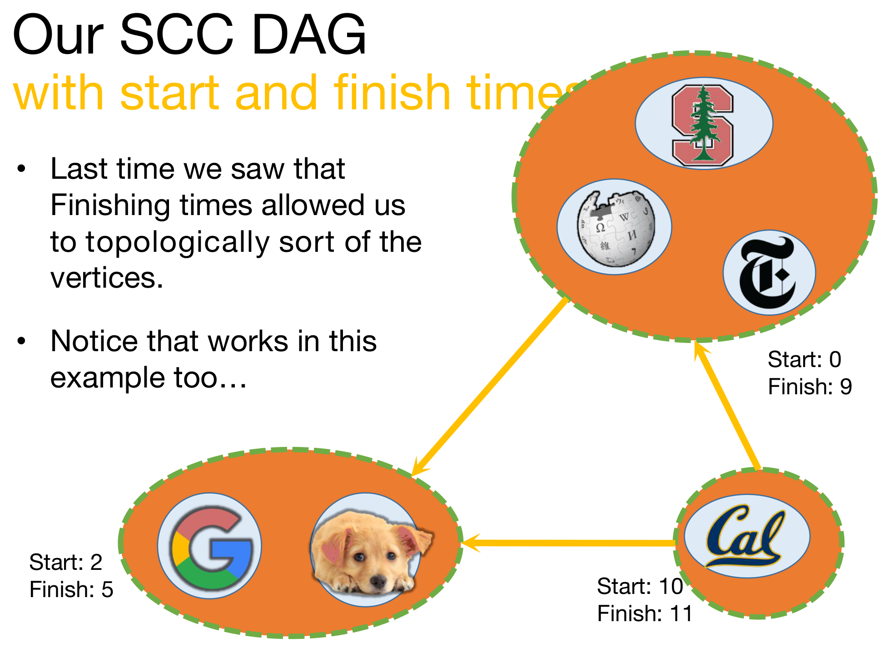
| SCC | 시작 시각 | 종료 시각 |
|---|---|---|
| \(\{\texttt{Stanford}, \texttt{Wiki}, \texttt{NYT}\}\) | 0 | 9 |
| \(\{\texttt{Puppies}, \texttt{Google}\}\) | 2 | 5 |
| \(\{\texttt{Cal}\}\) | 10 | 11 |
- 지난 시간에 종료 시각으로 정점들을 위상 정렬할 수 있었습니다.
- 이 예에서도 그것이 통한다는 점에 주목하세요… SCC DAG의 세 간선 \(\texttt{Cal} \to \{\texttt{Stanford}, \dots\}\), \(\texttt{Cal} \to \{\texttt{Puppies}, \dots\}\), \(\{\texttt{Stanford}, \dots\} \to \{\texttt{Puppies}, \dots\}\)는 모두 종료 시각이 큰 쪽에서 작은 쪽으로 향합니다(\(11 > 9\), \(11 > 5\), \(9 > 5\)).
9강의 정리는 DAG의 정점에 대한 것이었지만, 여기서는 원래 그래프에 순환이 있는데도 SCC 단위로 묶으면 같은 현상이 나타납니다. 5절의 보조정리 2가 이것을 일반적으로 증명합니다.
같은 표의 시작 시각은 간선 방향과 맞지 않습니다. 간선 \(\texttt{Cal} \to \{\texttt{Stanford}, \dots\}\)에서 출발점 Cal의 시작 시각은 10으로, 도착점의 0보다 큽니다. DFS가 어디서 시작하느냐에 따라 상류의 SCC를 나중에 발견할 수 있기 때문입니다. 반면 종료 시각은 어떤 순서로 탐색하든 상류 쪽이 더 크게 나옵니다. 상류 SCC는 하류 SCC를 다 탐색할 때까지 끝나지 않거나(먼저 발견된 경우), 하류 탐색이 다 끝난 뒤에야 시작되기(나중에 발견된 경우) 때문입니다. 이 두 경우가 곧 5.3절 증명의 두 경우입니다.
4.4 핵심 아이디어 (Main Idea)
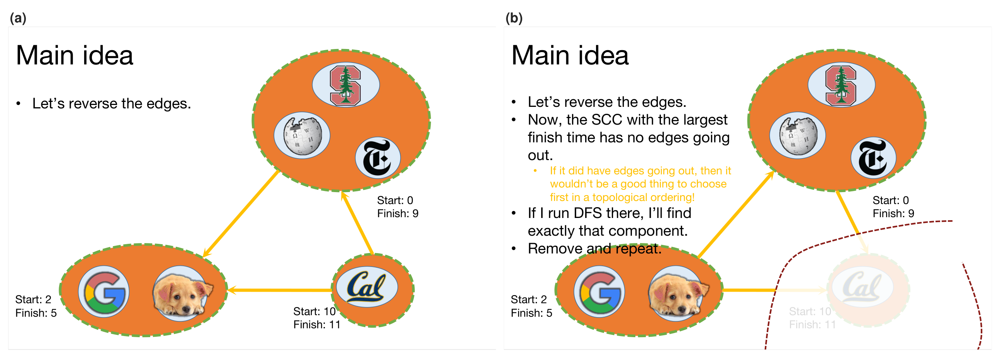
- 간선을 뒤집어 봅시다.
- 이제 종료 시각이 가장 큰 SCC에는 나가는 간선이 없습니다.
- 나가는 간선이 있었다면, 그 SCC를 위상 정렬에서 맨 앞에 고르는 것은 좋은 선택이 아니었을 것입니다!
- 거기서 DFS를 돌리면 정확히 그 요소를 찾게 됩니다.
- 지우고 반복합니다.
노란 글씨의 논리를 풀어 쓰면 이렇습니다. 원래 SCC DAG에서 종료 시각이 가장 큰 SCC는 위상 정렬의 맨 앞, 곧 들어오는 간선이 없는 SCC입니다. 간선을 뒤집으면 들어오는 간선이 나가는 간선이 되므로, 이 SCC는 나가는 간선이 없는 SCC가 됩니다. 2.7절의 연습 문제에서 바로 이런 SCC — D, E, F — 에서 시작해야 SCC가 하나만 깔끔하게 잘려 나왔습니다. 코사라주 알고리즘은 그런 시작점을 종료 시각으로 찾아내는 셈입니다.
예시에서는 이렇습니다.
- 종료 시각이 가장 큰 Cal(11)은 뒤집힌 그래프에서 나가는 간선이 없으므로, Cal에서 시작한 DFS는 Cal만 찾습니다. Cal을 지웁니다.
- 남은 것 중 종료 시각이 가장 큰 Stanford–Wiki–NYT 묶음(9)에서 나가는 뒤집힌 간선은 Cal로 가는 것뿐인데, Cal은 이미 지워졌습니다. 그래서 이 묶음만 찾습니다. 지웁니다.
- 마지막 Puppies–Google 묶음(5)에서 나가는 뒤집힌 간선은 모두 지워진 SCC로 향하므로, 이 묶음만 찾습니다.
“종료 시각이 가장 큰 SCC가 원래 그래프의 맨 상류라면, 종료 시각이 가장 작은 정점은 맨 하류에 있지 않을까? 그러면 간선을 뒤집지 않고 그 정점부터 DFS를 돌려도 되지 않을까?” 슬라이드에는 없지만 자연스럽게 떠오르는 이 생각은 틀렸습니다. 보조정리 2가 말하는 것은 SCC의 종료 시각, 곧 원소들의 최댓값에 대한 순서이고, 원소 하나하나의 종료 시각에 대한 것이 아니기 때문입니다.
반례: 간선 \(a \to b\), \(b \to a\), \(a \to c\)를 가진 그래프에서 \(a\)부터, \(b\)를 \(c\)보다 먼저 훑는 DFS를 하면 시각은 \(a: [0, 5]\), \(b: [1, 2]\), \(c: [3, 4]\)입니다. 종료 시각이 가장 작은 정점은 \(b\)인데, \(b\)는 맨 하류 SCC \(\{c\}\)가 아니라 상류 SCC \(\{a, b\}\)에 속합니다. 원래 그래프에서 \(b\)부터 DFS를 돌리면 \(a, b, c\)가 한 트리에 들어가 버립니다. 가장 큰 종료 시각은 그 SCC의 종료 시각 자체이므로 이런 문제가 없습니다.
5. 아이디어를 엄밀하게 (Let’s Make This Idea Formal)
5.1 다시 떠올리기 (Recall)
증명에 쓸 도구는 둘입니다. 하나는 1.5절의 시간 구간 구조이고(슬라이드는 같은 그림을 한 번 더 보여 줍니다), 다른 하나는 9강의 다음 주장입니다.
- 주장: DAG에서는 언제나 간선 \(A \to B\)의 \(A\)의 종료 시각이 더 크고, \(B\)의 종료 시각이 더 작습니다.
5.2 SCC DAG에서도 마찬가지 — 보조정리 2 (Same Thing, in the SCC DAG: Lemma 2)
슬라이드는 같은 주장을 SCC DAG로 옮깁니다 — 언제나 그렇게 됩니다. 이것을 보조정리 2라고 부릅니다.
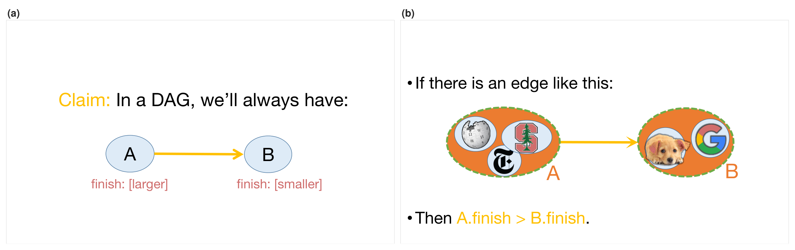
SCC 그래프에 간선 \(A \to B\)가 있으면
\[ A.\text{finish} \;>\; B.\text{finish} \]
입니다.
5.3 증명 (Proof Idea)
증명할 것은 \(A.\text{finish} > B.\text{finish}\)입니다. 첫 번째 DFS가 두 SCC 중 어느 쪽에 먼저 닿았느냐로 두 경우를 나눕니다.
- 첫 번째 DFS에서 \(A\)에 \(B\)보다 먼저 닿은 경우
- 첫 번째 DFS에서 \(B\)에 \(A\)보다 먼저 닿은 경우
여기서 “먼저 닿았다”는 \(A \cup B\)의 정점 가운데 가장 먼저 발견된 정점이 어느 쪽에 있느냐를 말합니다.
경우 1: \(A\)에 \(B\)보다 먼저 닿은 경우 (Case 1: We Reached A before B)
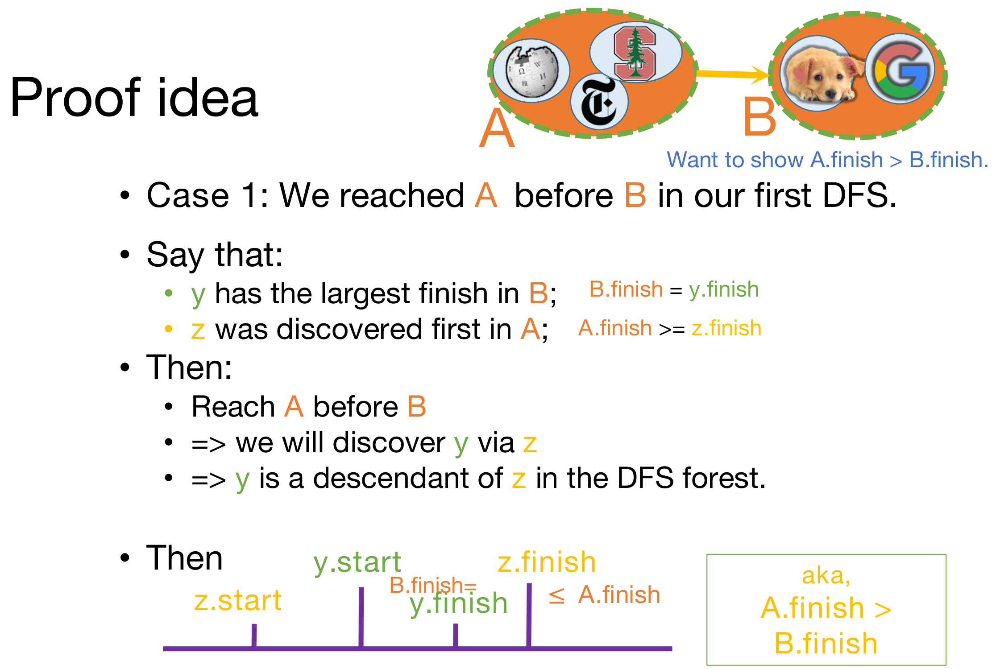
- 다음과 같이 둡시다.
- \(y\): \(B\)에서 종료 시각이 가장 큰 정점. 정의에 따라 \(B.\text{finish} = y.\text{finish}\)입니다.
- \(z\): \(A\)에서 가장 먼저 발견된 정점. \(A.\text{finish}\)는 최댓값이므로 \(A.\text{finish} \ge z.\text{finish}\)입니다.
- 그러면
- \(A\)에 \(B\)보다 먼저 닿았으므로,
- \(z\)를 거쳐 \(y\)를 발견하게 되고,
- 따라서 \(y\)는 DFS 숲에서 \(z\)의 후손입니다.
- 1.5절의 첫째 줄에 의해 시간축은 다음과 같습니다.
\[ z.\text{start} \;<\; y.\text{start} \;<\; \underbrace{y.\text{finish}}_{=\,B.\text{finish}} \;<\; z.\text{finish} \;\le\; A.\text{finish} \]
- 곧 \(A.\text{finish} > B.\text{finish}\)입니다.
증명에서 가장 많은 일을 하는 줄은 “\(z\)를 거쳐 \(y\)를 발견하게 된다”입니다. 이 줄이 왜 참인지 풀어 보겠습니다.
왜 \(y\)는 \(z\)의 후손이 되는가 — 미방문 경로 논증
\(z\)가 발견되는 순간 \(A \cup B\)의 모든 정점은 아직 미방문입니다. \(z\)가 그중 가장 먼저 발견된 정점이기 때문입니다. 또 \(z\)에서 \(y\)로 가는 경로가 있고, 그 경로의 모든 정점이 \(A \cup B\) 안에 있도록 고를 수 있습니다. \(A\) 안에서 간선 \(A \to B\)의 출발점까지 가고, 그 간선을 건너, \(B\) 안에서 \(y\)까지 가면 됩니다. 같은 SCC의 두 정점을 잇는 경로 위의 정점은 그 SCC에 속하기 때문입니다(그 정점은 양 끝과 서로 닿습니다). 결국 \(z\)가 발견되는 순간 \(z\)에서 \(y\)까지 미방문 정점만으로 된 경로가 있습니다.
이런 경로가 있으면 경로 위의 정점은 모두 \(z\)의 후손이 됩니다. 그렇지 않은 정점이 있다고 하고, 경로를 따라가며 처음 나오는 그런 정점을 \(w\), 그 바로 앞 정점을 \(p\)라고 합시다. \(p\)는 \(z\) 자신이거나 \(z\)의 후손이므로 DFS(p)는 DFS(z)가 끝나기 전에 끝나고, 끝나기 전에 이웃 \(w\)를 반드시 확인합니다. \(w\)는 \(z\)가 발견될 때 미방문이었으므로, 늦어도 그 확인 시점까지 — 곧 DFS(z)가 실행되는 동안 — 발견됩니다. 그러면 \(w\)는 \(z\)의 후손이 되어 가정에 어긋납니다. 표준 교과서(CLRS)는 이것을 흰 경로 정리(white-path theorem)라고 부릅니다.
예시에서 확인해 보면, \(A = \{\texttt{Stanford}, \texttt{Wiki}, \texttt{NYT}\}\), \(B = \{\texttt{Puppies}, \texttt{Google}\}\)일 때 \(A\)의 Stanford가 먼저 발견되었으므로 경우 1입니다. \(z = \texttt{Stanford}\), \(y = \texttt{Puppies}\)이고, \(0 < 2 < 5 < 9 \le 9\)로 \(A.\text{finish} = 9 > 5 = B.\text{finish}\)입니다.
경우 2: \(B\)에 \(A\)보다 먼저 닿은 경우 (Case 2: We Reached B before A)
- \(B\)에서 \(A\)로 가는 경로는 없습니다.
- SCC 그래프에는 순환이 없기 때문입니다. 그런 경로가 있었다면 간선 \(A \to B\)와 합쳐 순환을 이루고, 보조정리 1에 어긋납니다.
- 그래서 \(B\)의 탐색을 완전히 끝내고, 그동안 \(A\)에는 닿지 않습니다.
- \(A\)는 나중에, DFS를 다시 시작한 뒤에 탐색됩니다.
- 곧 \(A.\text{finish} > B.\text{finish}\)입니다.
이 경우도 시간축으로 정리하겠습니다. \(B\)에서 가장 먼저 발견된 정점을 \(y'\)이라 합시다.
- 경우 1의 미방문 경로 논증을 \(B\) 안에서 쓰면, \(B\)의 모든 정점이 \(y'\)의 후손이 되므로 \(B.\text{finish} = y'.\text{finish}\)입니다.
- \(y'\)에서는 \(A\)의 어떤 정점에도 닿지 않으므로,
DFS(y')가 실행되는 동안 \(A\)의 정점은 하나도 발견되지 않습니다. \(y'\)보다 먼저 발견된 \(A\)의 정점도 없습니다(경우 2의 가정). - 따라서 \(A\)의 정점은 모두 \(y'.\text{finish}\) 이후에 발견되고, 그만큼 늦게 끝납니다.
\[ B.\text{finish} \;=\; y'.\text{finish} \;<\; (A \text{의 모든 정점의 시작 시각}) \;<\; A.\text{finish} \]
슬라이드는 “DFS를 다시 시작한 뒤에”라고 적었지만, 증명에 필요한 것은 “\(B\)의 탐색이 끝난 뒤에”뿐입니다. 예컨대 어떤 정점 \(x\)에서 \(B\)와 \(A\)로 가는 간선이 모두 나 있고 DFS가 \(B\) 쪽을 먼저 탔다면, \(A\)는 다시 시작하지 않고 같은 트리의 다른 가지에서 탐색됩니다. 그래도 \(B\)보다 늦게 시작하므로 결론은 같습니다. 예시의 \(A = \{\texttt{Cal}\}\), \(B = \{\texttt{Stanford}, \texttt{Wiki}, \texttt{NYT}\}\)는 슬라이드의 문장 그대로 Cal이 DFS를 다시 시작한 뒤에 탐색된 경우로, \(11 > 9\)입니다.
어느 경우든 (In Either Case)
\[ A.\text{finish} \;>\; B.\text{finish} \]
이고, 이것이 보이려던 것입니다. \(\blacksquare\)
슬라이드의 노란 글씨가 덧붙입니다 — 이것은 지난 시간에 위상 정렬에서 쓴 두 경우 논증과 정확히 같습니다. 다만 SCC DAG에서 할 뿐입니다! 9강에서는 “\(B\)가 \(A\)의 후손인가 아닌가”로 경우를 나누었고 DAG라는 전제는 “\(B\)에서 \(A\)로 돌아오는 경로가 없다”는 데 쓰였는데, 여기서는 그 자리를 보조정리 1이 채웁니다.
5.4 따름정리 1 (Corollary 1)
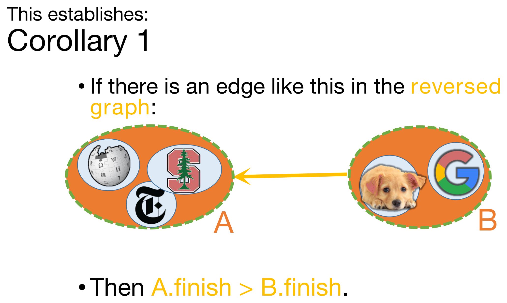
뒤집힌 그래프의 SCC 그래프에 간선 \(B \to A\)가 있으면
\[ A.\text{finish} \;>\; B.\text{finish} \]
입니다. 곧 뒤집힌 그래프에서는 모든 SCC 사이 간선이 종료 시각이 더 큰 SCC를 향합니다.
증명은 한 줄입니다. 뒤집힌 그래프의 간선 \(B \to A\)는 원래 그래프의 간선 \(A \to B\)이므로, 보조정리 2를 그대로 적용하면 됩니다. 여기서 SCC 자체는 뒤집어도 바뀌지 않는다는 것(3.2절)과, 종료 시각은 첫 번째 DFS의 값이라는 것을 함께 쓰고 있습니다.
5.5 이제 왜 SCC를 찾는지 보입니다 (Now We See Why This Finds SCCs)
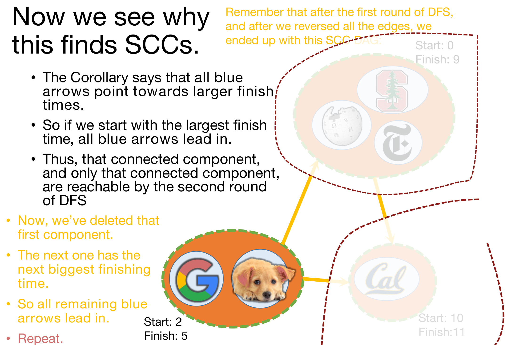
- 따름정리는 모든 (뒤집힌 SCC DAG의) 화살표가 종료 시각이 더 큰 쪽을 가리킨다고 말합니다.
- 그러니 종료 시각이 가장 큰 SCC에서 시작하면, 모든 화살표가 그쪽으로 들어옵니다. 나가는 화살표는 없습니다.
- 따라서 두 번째 DFS가 닿을 수 있는 것은 그 요소, 오직 그 요소뿐입니다.
- 이제 첫 번째 요소를 지웠습니다.
- 다음 요소는 그다음으로 큰 종료 시각을 갖습니다.
- 그래서 남은 화살표도 모두 그쪽으로 들어옵니다.
- 반복합니다.
5.6 귀납법으로 엄밀하게 (Formally, We Prove It by Induction)
“지우고 반복”을 귀납법으로 옮깁니다.
앞에서 본 알고리즘은 강한 연결 요소를 올바르게 찾아냅니다.
- 귀납 가설: 두 번째(뒤집힌) DFS 숲에서 처음 찾은 \(t\)개의 트리는, 종료 시각이 가장 큰 \(t\)개의 SCC입니다.
- 기저 사례 (\(t = 0\)): 뒤집힌 DFS 숲에서 처음 찾은 0개의 트리는 종료 시각이 가장 큰 0개의 SCC입니다. (참)
귀납 단계 (Inductive Step)
슬라이드는 칠판 그림으로 보충했다고 적어 두었습니다.
- 귀납에 의해 처음 \(t\)개의 트리가 가장 늦게 끝난 \(t\)개의 SCC라고 가정합니다.
- \((t+1)\)번째로 만들어진 트리를 보고, 그 뿌리를 \(x\)라고 합시다.
- \(x\)가 SCC \(A\)에 산다고 합시다.
- 그러면 남은 모든 SCC \(B\)에 대해 \(A.\text{finish} > B.\text{finish}\)입니다.
- \(x\)를 종료 시각이 가장 큰 것으로 골랐기 때문입니다.
- 그러면 남은 SCC DAG에서 \(A\)를 떠나는 간선은 없습니다.
- 따름정리에서 나옵니다.
- 그러면 \(x\)에서 시작한 DFS는 정확히 \(A\)를 되찾습니다.
- 그보다 많이 찾지 않습니다. 다른 것에는 닿을 수 없기 때문입니다.
- 그보다 적게 찾지 않습니다. \(A\)는 강하게 연결되어 있기 때문입니다.
- (간선을 모두 뒤집어도 \(A\)가 여전히 강하게 연결되어 있다는 사실을 쓰고 있다는 점에 주목하세요.)
- 따라서 \((t+1)\)번째 트리는 종료 시각이 \((t+1)\)번째로 큰 SCC입니다.
슬라이드의 줄마다 생략된 연결 고리를 채우면 다음과 같습니다.
- \(A\)의 정점은 모두 미방문입니다. 귀납 가설에 의해 처음 \(t\)개의 트리는 SCC \(t\)개를 통째로 담고 있고, \(x\)는 거기 들지 않았으므로 \(A\)도 그 \(t\)개 중 하나가 아닙니다. SCC는 통째로 한 트리에 들어가거나 아예 안 들어가므로, \(A\)의 정점은 하나도 방문되지 않았습니다.
- \(A.\text{finish} = x.\text{finish}\)이고, 남은 모든 SCC \(B\)보다 큽니다. 두 번째 DFS는 미방문 정점 가운데 종료 시각이 가장 큰 \(x\)를 뿌리로 골랐습니다. 남은 SCC의 정점은 모두 미방문이므로 그 종료 시각은 모두 \(x.\text{finish}\) 이하이고, 종료 시각은 정점마다 다르므로 \(B \ne A\)인 SCC의 최댓값은 \(x.\text{finish}\)보다 작습니다.
- 뒤집힌 그래프에서 \(A\)를 떠나는 간선은 이미 찾은 SCC로만 향합니다. \(A\)에서 SCC \(C\)로 가는 뒤집힌 간선이 있다면 따름정리 1에 의해 \(C.\text{finish} > A.\text{finish}\)인데, 2번에 의해 그런 \(C\)는 남은 SCC일 수 없으므로 처음 \(t\)개 가운데 하나입니다. 그 정점들은 이미 방문되어 DFS가 들어가지 않습니다.
- DFS가 찾는 집합은 정확히 \(A\)입니다. 3번에 의해 \(A\) 밖의 미방문 정점에는 닿지 않고, \(A\)는 뒤집힌 그래프에서도 강하게 연결되어 있고 모든 정점이 미방문이므로 \(x\)에서 \(A\)의 모든 정점에 닿습니다.
결론 (Conclusion)
- 기저 사례: 완료
- 귀납 단계: 완료
- 결론: 두 번째(뒤집힌) DFS 숲은 모든 SCC를 트리로 담고 있습니다!
- 귀납 가설에서 \(t\)를 SCC의 개수로 둔 것입니다. \(\blacksquare\)
되짚어보기 (Recap)
핵심: SCC는 O(n + m) 시간에 찾을 수 있습니다 (Punchline: We Can Find SCCs in Time O(n + m))
알고리즘을 한 번 더 적습니다.
- DFS를 해서 DFS 숲을 만듭니다.
- 시작 정점은 아무 순서로나 고릅니다.
- 종료 시각을 기록합니다.
- 그래프의 모든 간선을 뒤집습니다.
- DFS를 다시 해서 또 하나의 DFS 숲을 만듭니다.
- 이번에는 첫 번째 DFS에서 얻은 종료 시각의 역순으로 정점을 늘어놓습니다.
- SCC는 두 번째 DFS 숲의 서로 다른 트리들입니다.
붉은 글씨가 덧붙입니다 — 분명 뻔한 것은 아니었습니다. 수업 시간을 통째로 썼으니까요! 그래도 이제는 덜 신비롭기를 바랍니다.
슬라이드는 수행 시간 \(O(n+m)\)을 결과로만 적어 두었으므로, 단계별로 확인해 보겠습니다.
| 단계 | 하는 일 | 비용 |
|---|---|---|
| 첫 번째 DFS | 그래프 전체를 DFS 숲으로 탐색하며 종료 시각을 기록 | \(O(n+m)\) |
| 종료 순서 기록 | 9강의 위상 정렬처럼, 정점이 완료될 때마다 리스트 맨 앞에 넣음 | 정점마다 \(O(1)\), 모두 \(O(n)\) |
| 간선 뒤집기 | 모든 간선 \((u, v)\)를 훑어 \(v\)의 새 인접 리스트에 \(u\)를 붙임 | \(O(n+m)\) |
| 두 번째 DFS | 리스트 순서대로 미방문 정점에서 DFS를 다시 시작 | \(O(n+m)\) |
| 합계 | \(O(n+m)\) |
종료 시각을 모아 비교 정렬하면 \(O(n \log n)\)이 들지만, 그럴 필요가 없다는 것이 요령입니다. 정점은 종료 시각이 빠른 순서로 완료되므로, 완료될 때마다 리스트 맨 앞에 넣으면 리스트가 저절로 종료 시각의 역순이 됩니다. 9강에서 위상 정렬을 할 때 쓴 바로 그 방법이고, 실제로 이 리스트는 원래 그래프가 DAG였다면 위상 정렬 그 자체입니다.
요약 (Recap)
- 깊이 우선 탐색은 아주 쓸모 있는 구조를 드러냅니다!
- 지난주에는 이 구조로 위상 정렬을 \(O(n+m)\) 시간에 할 수 있음을 보았습니다.
- 오늘은 같은 구조로 강한 연결 요소도 \(O(n+m)\) 시간에 찾을 수 있음을 보았습니다.
- 이것은 꽤 자명하지 않았습니다.
9강의 마지막에 남은 질문으로 꼽혔던 유향 그래프의 강한 연결 요소가 이것으로 풀렸습니다.
다음 시간 (Next Time)
- 다익스트라 알고리즘(Dijkstra’s algorithm)!
정리하며 (Closing Remarks)
이번 강의의 논증 사슬을 단계별로 압축하면 다음과 같습니다.
| 단계 | 내용 | 근거 |
|---|---|---|
| ① DFS 복습 | 유향 그래프에서도 DFS는 나가는 간선만 따라 걸으며 시작·종료 시각을 적고, 모든 곳에 닿지 못하면 다시 시작해 DFS 숲을 만든다 | 방향 붙은 미로, 깊이 우선 숲 |
| ② 시간 구간 구조 | 후손의 구간은 조상의 구간 안에 들고, 조상–후손 관계가 없거나 다른 트리에 있는 두 정점의 구간은 겹치지 않는다 | 괄호 정리 |
| ③ SCC의 정의 | 서로 도달 가능하다는 동치 관계의 동치류가 강한 연결 요소이며, 모든 정점은 정확히 하나의 SCC에 속한다 | 반사·대칭·추이성 |
| ④ 단순 해법의 한계 | 정점마다 DFS를 돌려 도달 관계를 모으면 \(\Omega(n^2)\)이 든다 | 바깥 루프의 DFS \(n\)번 |
| ⑤ 시작점 문제 | 하류 끝의 SCC에서 시작한 DFS만 SCC 하나를 깔끔하게 잘라 내며, 잘못 시작하면 트리 하나에 SCC 여러 개가 들어간다 | D와 A에서 시작하는 연습 문제 |
| ⑥ 코사라주 알고리즘 | DFS로 종료 시각을 적고, 간선을 모두 뒤집고, 종료 시각의 역순으로 DFS를 다시 하면 두 번째 숲의 트리가 SCC다 | 인터넷 그래프 예시 |
| ⑦ SCC 그래프 | SCC를 정점 하나로 줄인 그래프에 순환이 있다면 두 SCC가 합쳐져야 하므로, SCC 그래프는 DAG다 | 보조정리 1 |
| ⑧ SCC 종료 시각 | SCC 그래프의 간선 \(A \to B\)에서 언제나 \(A.\text{finish} > B.\text{finish}\)다 | 보조정리 2, 먼저 닿은 쪽에 따른 두 경우 |
| ⑨ 뒤집힌 그래프 | 간선을 뒤집으면 SCC 사이 간선은 모두 종료 시각이 큰 SCC를 향하므로, 종료 시각이 가장 큰 남은 SCC에서는 나가는 간선이 없다 | 따름정리 1 |
| ⑩ 정당성 | 매번 남은 정점 중 종료 시각이 가장 큰 정점에서 시작한 DFS는 정확히 그 정점의 SCC를 찾으므로, 두 번째 숲의 트리가 모두 SCC다 | 트리 개수에 대한 귀납법 |
| ⑪ 수행 시간 | DFS 두 번, 간선 뒤집기, 종료 순서 기록이 모두 선형이라 전체가 \(O(n+m)\)이다 | 완료 시 리스트 맨 앞에 넣기 |